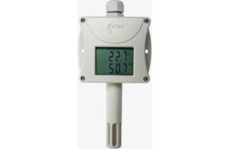
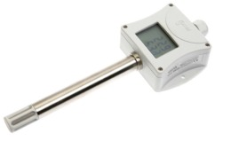

Las sondas de humedad de la serie EWHS son sensores construidos para conectarse a instrumentos de medición de humedad y humedad/temperatura que se caracterizan por su elevada precisión. Salida 4…20m A.
Dimensiones: 103x25mm.
Velocidad máxima del aire: 20m/s.
Sondas de pared con protección IP65.
Temperatura uso: -30…+70°C.
Medición de humedad: 0…100%HR.
Filtro de aire de malla de metal.
Alimentación 9…28Vc.
Sonda humedad EWHS-304
Las sondas de humedad de la serie EWHS son sensores construidos para conectarse a instrumentos de medición de humedad y humedad/temperatura que se caracterizan por su elevada precisión. Salida 4…20mA.
Dimensiones: 80x80x25.
Velocidad máxima del aire: 20m/s.
Sondas de pared con protección IP65.
Temperatura uso: -30…+70°C.
Medición de humedad: 0…100%HR.
Filtro de aire de polietileno.
Alimentación: 9..30Vc.
Humedad/Temperatura/EWHS-314
Sensor que incorpora sonda de temperatura (PT-100) y humedad (Hygromer).
Salida 4…20mA.
Dimensiones: 80x80x25.
Velocidad máxima del aire: 20m/s.
Sondas de pared con protección IP65.
Temperatura uso: -30…+70°C.
Medición de humedad: 0…100%HR.
Filtro de aire de polietileno.
Alimentación: 15…40Vc o 12….28Vc.
Sonda humedad/temperatura STA-3
Transmisor de H.R y temperatura ambiente para montaje mural en ambientes limpios (oficinas, viviendas, laboratorios, etc...).
Dimensiones: 105 x 55 x 46 mm. Temperatura: Rango 0/50°C. Precisión: I 0.5°C. Señal de salida: 4/20 mA.
H.R.: Sensor capacitivo. Rango: 0/100%.
Precisión: Mejor del 3% (entre el 5 y el 95%). Señal de salida: 4/20 mA.
Humedad/temperatura STA-3E
Mismas características que el anterior pero para aplicación en ambientes industriales o a la intemperie. Rangos: Temperatura: -5+55°C. H.R.: 0/100%. Presentación: Caja ABS de 110 x 75 x 57 mm. Grado de protección: IP65. Sensores protegidos con filtro de bronce sinterizado.
Sonda Humedad ambiente

Transmisor de humedad relativa ambiente. Uso al aire libre, de interior.
Salida: 4-20ma, rango de humedad relativa 0 a 100%.
Rango de operación de temperatura -30 hasta +80°c.
Rango de humedad relativa de 0 a 100%. Filtro con malla de acero inoxidable
Protección de la caja con la electrónica ip65, ip40 sensores.
Alimentación: 9-30vdc. Dimensiones: 88.5 x 170 x 39.5 mm (w x h x d), longitud del tallo 75 mm
Sonda Humedad/Temperatura cable
Humedad relativa del aire, sensores de temperatura en la sonda de cable de 1 metro. Los valores de medición también se convierten a otra interpretación. Humedad salida: 4-20ma. Valor medido: humedad relativa + temperatura
Intervalo de medición de la temperatura -30 hasta 105°C. Rango de humedad relativa de 0 a 100%
Filtro con malla de acero inoxidable. Dimensiones: pantalla de la unidad 88.5 x 114 x 39.5 mm (w x h x d), sonda Ø18x 88 mm
Transmisor Humedad Temperatura salida relé

Los transmisores con salidas a relé están diseñados para la medición y control de temperatura, humedad relativa y presión barométrica. Sus campos de aplicación más frecuentes son la industria alimentaria, automatización de procesos, salas de servidores, museos, galerías de arte, estaciones meteorológicas, etc.
Salidas: 4÷20 mA, 0÷10 V, RS232, RS485, ETHERNET
Doble display. Dos salidas a relé
Hasta tres entradas binarias
Configuración desde teclado o desde software